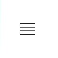

VTN 对比评测：在跨境健康电商这条赛道上，它为什么敢只选 12 个品牌
用过三四种跨境会员购平台后，我发现 VTN 的思路跟同行完全不一样——用 1% 的入选率做窄而深的品类覆盖。这篇从选品、供应链、社区三个维度拆开看它的差异化，以及这种模式带来的取舍。
先给一个定位：这个赛道里它不是最大的那个，但是最"轴"的那个
跨境健康美丽电商这两年已经挤了不少玩家了，从老牌的海淘转运平台到大厂做的会员购频道，再到各种垂直领域的精品小店。绝大多数走的是一条路——SKU 越多越好，覆盖越广越安全，用户搜什么都能搜到，总有一款能转化。
VTN 是个异数。它的官网上明明白白地写着选品团队每年接触上千个品牌，最终走进 VTN APP 的不超过 1%。目前整个平台只做了 12 个战略品牌，集中在细胞健康、口服美容、营养补剂这几个前沿科技领域。你在上面找不到大众熟知的那几个国际大牌，也找不到国货，甚至连品类都不是最全的。
但就是这样一个"窄门"，会员复购率和客单价在同类里都排得上号。我前后对比过它和另外三个同行，差异根本不是运营技巧层面的——是底层思路就不一样。下面拆开说三个我觉得最关键的差异化。
差异化一：主流之前的选品，不是选爆款是选"即将成为爆款的科技"
同类平台的选品逻辑大多是数据驱动的——看亚马逊销量排行、看小红书种草量、看 Google Trends 搜索指数，哪个品类起来了就跟进哪个。这条路走起来快，但容易撞车，而且容易把品牌方的营销话术当卖点。
VTN 的"主流之前"选品哲学走的是另一条路：在产品还处于科技验证阶段、小范围学术圈讨论阶段就启动全球考察。它的硬标准有两个——前沿科技和珍稀原料。
前沿科技意味着要有专利、有临床数据、有顶级学术背书。样本里提到的 MitoQ 就是典型：独家专利分子在电荷吸引下靶向进入线粒体中和自由基，剑桥大学 Mike Murphy 教授联合耶鲁等上百所学府研发，60 项全球专利、18 项临床试验、730 篇以上研究论文。SRW 基于九维细胞理论的 2-HOBA 成分，从喜马拉雅山区苦荞里提取，能智能平衡自由基。这些东西你在别的跨境平台上基本找不到——不是因为不卖，是卖的话很难把这些硬核参数讲清楚，用户也懒得等它从学术圈普及到消费圈。
珍稀原料更直接。MitoQ 的核心成分从新西兰本土天然原料提取，BEE+ 毕佳的麦卢卡蜂蜜来自新西兰北岛原始森林，eimele 亦餐的植物原料来自澳洲有机农场。原料产地本身就是稀缺资源，供应链上能拿到的量就那么多，天然限制了规模但也天然屏蔽了仿品竞争。
这套选品逻辑带来的好处是，VTN 的商品在竞品里几乎没有价格战压力——你没法拿一个没有专利、没有临床数据的同类产品来打价格，因为用户买的不是"抗氧化"这个功能点，是"专利分子 + 临床验证"这整套信任包。

差异化二：品牌直供的供应链，从根本上切断了中间商加价和假货
普通电商的供应链是一条长长的链条：品牌方 → 总代 → 批发 → 经销商 → 电商商家 → 快递 → 消费者。每一层都要加价，每一层都有掉包风险，保质期可能被篡改，仓储温度可能控制不当，外包装损坏了重新打包就冒充正品。这些问题在海淘代购里尤其严重——你连代购本人都见不到，更别说追溯供应链了。
VTN 的做法是直接砍掉所有中间环节：品牌方 → VTN 全球中心仓 → 快递 → 会员。品牌方的货不经过任何中间商，直接放进 VTN 的全球中心仓。这不是嘴上说说的"自营"——VTN 自建实验室对每批次商品复检，还跟瑞士 SGS、德国 TUV、英国 ITS 合作出具第三方检测报告。品牌方必须同意三个条件才能进入 VTN 体系：源头直供、检测开放、会员专属定价。
这三个条件从源头上排除了电商最头疼的几个问题。假货风险直接消失了——商品只有两个来源，品牌方生产线或 VTN 自己的中心仓，中间没有任何环节可能被掉包。价格方面，会员价就是品牌方给的战略合作底价，不是中间商加价后的零售价，叠加各等级会员折扣之后，实际到手价比代购渠道还低，而且正品保障的信任成本为零。
时效也快。国内仓库发货 2-3 天能到，跨境干线 72 小时能到当地，这跟海淘代购动辄 15-30 天的等待形成了鲜明对比。退换货也简单，退到 VTN 仓就行，不用跟模糊不清的"卖家"扯皮。想体验这套直供模式，安装包从官方下载拿。
当然这套模式也有代价。商品选择范围受 12 个战略品牌限制，不是所有海外好品牌都能在 VTN 找到。新品上架速度取决于品牌方产能，品牌方跟不上 VTN 也无能为力。部分爆款因为品牌方产能小偶尔会缺货——样本里提到的 SRW Celᵉ 就出现过短暂断货。但这些"局限"换个角度看其实是这套模式的护城河：如果你能接受它的选品范围，那在这个范围内它就是最省心的选择。
差异化三：V 社区不是流量池，是会员真实使用经验的沉淀
绝大多数电商平台的社区板块本质上是流量池——算法推荐 KOL 软文，商家发种草笔记，用户发评价晒单然后拿积分换优惠券。内容的出发点是转化，不是交流。
V 社区不太一样。它的定位是会员之间的真实交流场，所有内容来自真实会员或 VTN 认证的顾问，不是付费广告。核心板块是会员日记——分享真实使用感受、自己摸索出来的产品搭配方案、前后对比的长期反馈、从免费注册升到白金会员的踩坑心得。样本里提到一个很具体的例子：有人会分享"吃了三个月 SRW Celᵉ，感觉精力好了一些"这种朴素的真实感受，反而比"神器！吃了立刻年轻十岁"的浮夸内容更可信。
V 社区还有一个顾问答疑板块。VTN 认证的会员顾问会回答具体的选购和使用问题——"SRW Celᵉ 和 MitoQ 姜黄素哪个更适合我爸""代谢咖啡 Pro 晚上喝会不会失眠""VIDA GLOW 精准肽适合多大年龄开始吃"。这些回答比商品详情页更接地气，都是真实会员场景的具体建议，顾问答疑的完整分类和更多进阶玩法可以去vtn文档翻。
社区对选品逻辑也有反哺作用。顾问会把社区里高频出现的问题和会员反馈整理出来，给选品团队作为参考。比如如果很多会员在社区问"有没有适合糖尿病人的代谢方案"，选品团队就会在全球考察时多关注这个领域。
这套模式的取舍：不是所有人都适合
VTN 选品窄、供应链短、社区真，这三件事凑在一起，决定了它不是一个"什么都能买"的平台，而是一个"在特定领域里最省心"的选择。
如果你买健康补剂只看"有没有效"，不关心背后的科技背书和原料来源，那 VTN 的产品对你来说可能定价偏高，同样的功效你可以在别的平台花更少的钱买到。如果你喜欢探索各种新奇品牌、愿意花时间在不同代购渠道之间比价，那 VTN 只做 12 个品牌的格局会让你觉得选择太少。
但如果你正好相反——你想找的是经过严格筛选的、有硬科技背书的产品，不想花时间在代购真假和比价上，希望有一个固定的渠道能一站式买到几个前沿科技品牌，那 VTN 可能是目前跨境健康电商里最干净的选择。